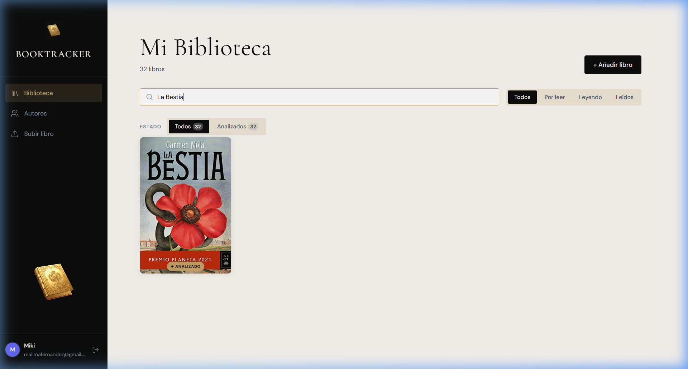
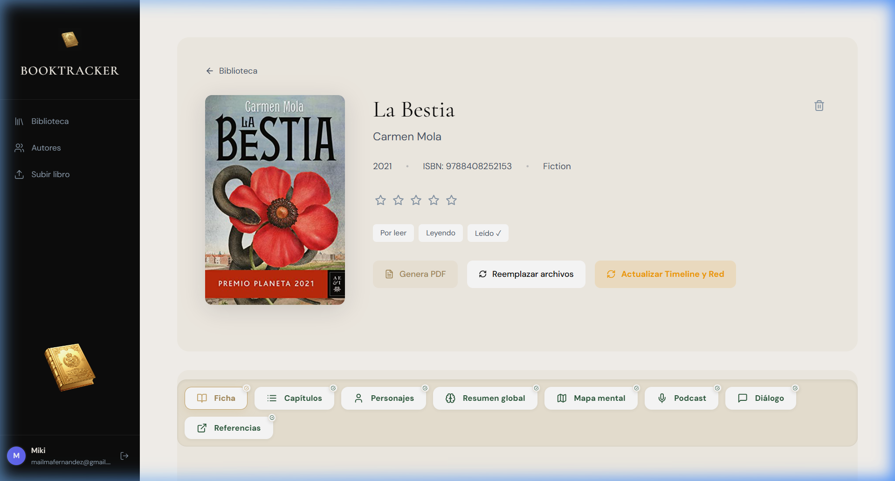
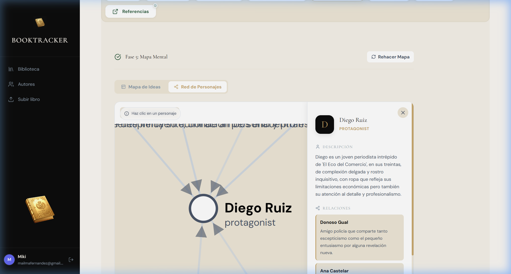
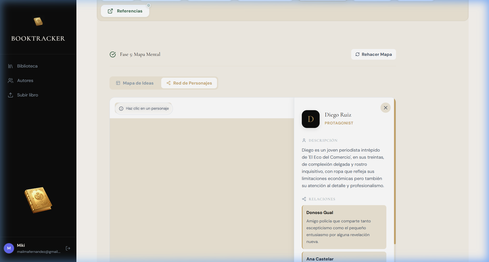

Bienvenido a BookTracker, tu suite de análisis literario inteligente. Este manual te guiará a través de la instalación, la operativa diaria y el uso de las herramientas avanzadas impulsadas por Inteligencia Artificial.
BookTracker no es solo una biblioteca; es un puente entre tú y tus libros. Utiliza modelos de lenguaje de última generación (como Google Gemini) para "leer" tus obras y extraer datos que antes requerirían horas de estudio.
2. Guía de Instalación (Windows)
Para usuarios que desean ejecutar la aplicación localmente en su PC.

Instalar Docker Desktop: Descárgalo desde docker.com. Es el motor que permite que BookTracker funcione sin configuraciones complejas.
Lanzar la Aplicación: Abre la carpeta del proyecto y haz doble clic en BOOKTRACKER.bat.
Acceso: El navegador se abrirá automáticamente en http://localhost:8081. No cierres la ventana negra mientras uses la aplicación.
3. Operativa de Análisis
Cuando subes un libro, este entra en una "Tubería de Análisis" que consta de 6 fases:
Fase 1: Ficha y Autor: Identifica el libro y busca información externa.
Fase 2: Estructura de Capítulos: Divide el texto y genera resúmenes.
Fase 3: Análisis de Personajes: Extrae roles y relaciones.
Fase 4: Resumen Global: Ensayo completo sobre la obra.
Fase 5: Mapa Mental: Estructura visual de ideas.
Fase 6: Podcast: Guion y audio generado.
💡 Consejo Pro
Puedes pausar, cancelar o reintentar cualquier fase si detectas que la IA ha omitido algún detalle importante.

4. Herramientas Avanzadas
Red de Personajes
Pulsa sobre cualquier círculo en el mapa para abrir el Panel de Detalles. Aquí verás la descripción psicológica del personaje y con quién se relaciona.

Línea de Tiempo y Podcast
En la pestaña "Capítulos", activa la vista de "Línea de Tiempo" para ver un recorrido visual por los hitos del libro. En "Podcast", escucha el análisis generado por expertos de IA.

5. Solución de Problemas
El análisis se detiene: La aplicación reintentará automáticamente cuando la cuota de la IA se resetee.
No aparece la portada: Usa el botón "Cambiar portada" para buscar imágenes alternativas.